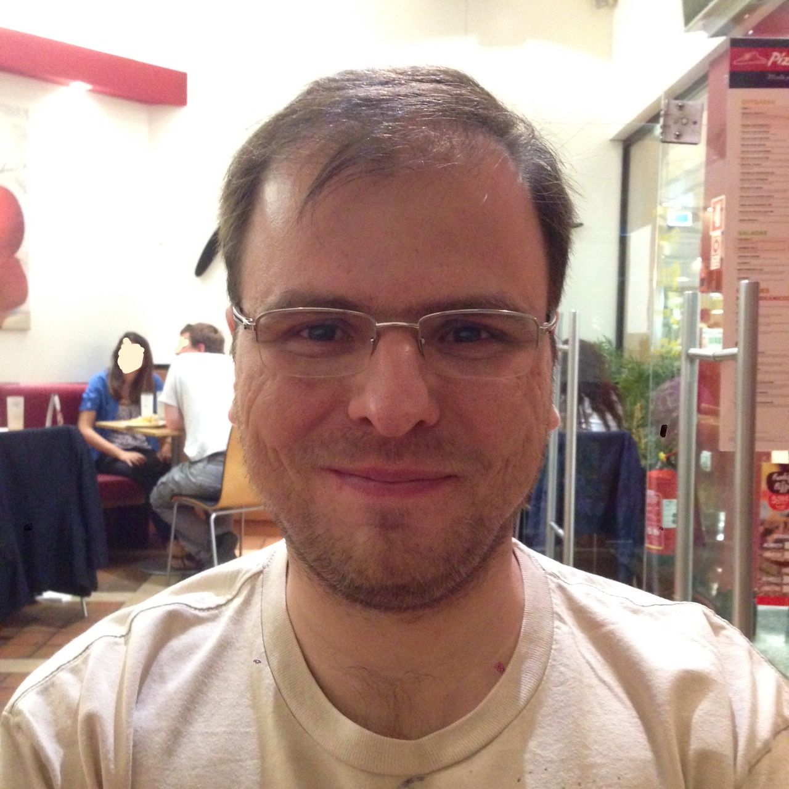

Alysson Bessani
Faculdade de Ciências da Universidade de Lisboa

About the speaker
Alysson Bessani is an associate professor at the Informatics Department of Universidade de Lisboa, Portugal. He is a member of the LaSIGE (Large Scale Informatics Systems Laboratory) group and collaborates with the Navigators team on research projects. He has spent time at Microsoft Research Cambridge in 2014 and at Carnegie Mellon University's CyLab in 2010, focusing on systems and network research.